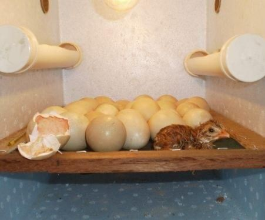

Chocadeira
Um projeto escolar sobre o funcionamento das chocadeiras e seu uso na incubação de ovos.
O Que é uma Chocadeira?
A chocadeira é um dispositivo utilizado para incubar ovos, especialmente em ambientes controlados. Ela mantém a temperatura, umidade e ventilação ideais para o desenvolvimento dos embriões. A chocadeira é essencial na produção de aves, seja em sistemas comerciais ou em pequena escala.
Essa tecnologia possibilita o nascimento de aves de maneira mais controlada e com maior sucesso de eclosão, já que simula o processo natural de incubação, mas de forma mais eficiente e previsível.
Funcionamento da Chocadeira
O funcionamento de uma chocadeira se baseia no controle de temperatura e umidade. A temperatura interna deve ser mantida entre 37,5°C e 38°C para que os embriões se desenvolvam corretamente. A umidade deve ser controlada entre 50% a 60% para evitar a desidratação dos ovos.
Algumas chocadeiras possuem sistemas automáticos de ventilação, que garantem a troca de ar necessária para o desenvolvimento dos embriões. Além disso, o viramento dos ovos também pode ser feito de forma automática, garantindo uma incubação mais eficiente.
Tipos de Chocadeiras
Existem vários tipos de chocadeiras, cada uma com características específicas para diferentes necessidades:
- Chocadeira Manual: Requer que o operador controle manualmente a temperatura e umidade, e vire os ovos de forma periódica. É indicada para quem tem um número pequeno de ovos.
- Chocadeira Automática: Possui controle digital de temperatura, umidade e ventilação. Além disso, o sistema de viramento de ovos é automático, o que facilita o uso e aumenta a taxa de sucesso de eclosão.
- Chocadeira Industrial: Usada para incubar grandes quantidades de ovos. Ela é totalmente automatizada, com controle de temperatura, umidade e ventilação, ideal para produções comerciais em larga escala.
Escolher o tipo de chocadeira adequado depende de fatores como a quantidade de ovos a ser incubada e o nível de automação desejado.
Contato
Se você tem dúvidas sobre como funciona uma chocadeira ou precisa de mais informações sobre o tema, entre em contato conosco: